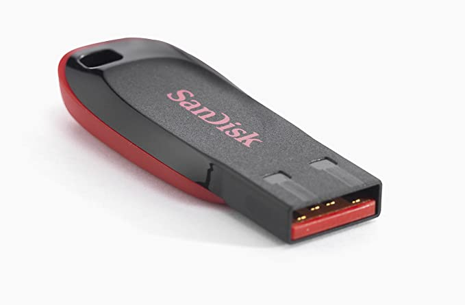
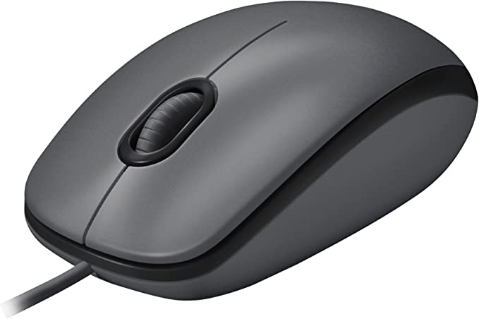
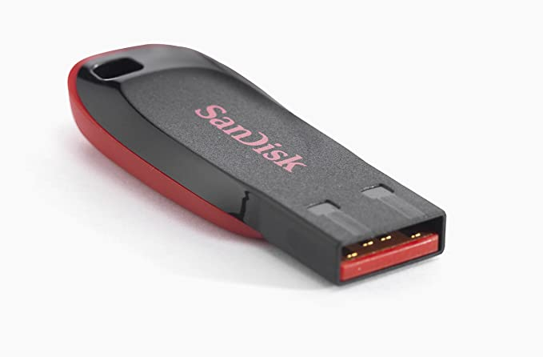
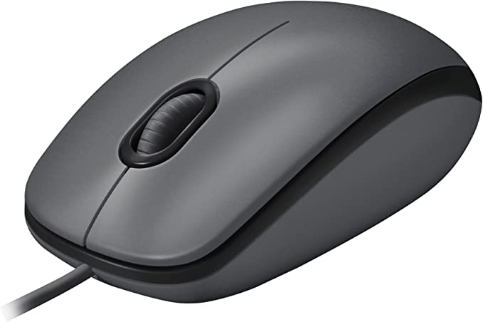

Pen Drive 128gb Cruzer Blade - Sandisk
R$78,90
À vista
Leitor E Gravador De Cartões Smart Card USB 2.0 Comtac 9202

R$74,90
À vista
Mouse com fio USB Logitech M100 - Cinza
R$35,00
À vista
Geralmente os computadores básicos incluem o gabinete, o monitor, o teclado e o mouse. No entanto, você pode conectar diferentes tipos de dispositivos, também conhecidos como periféricos.
Periféricos são aparelhos ou placas que enviam e recebem informação do computador, em ligação ao CPU da máquina.
Os exemplos de mais comuns periféricos são: pendrives, impressoras, digitalizadores, leitores ou gravadores de CDs e DVDs, leitores de cartões, mouses, teclados, webcam e etc.
Dispositivos USB
USB é a sigla em inglês de Universal Serial Bus (“Porta Universal”, em português), um tipo de tecnologia que permite a conexão de periféricos sem a necessidade de desligar o computador, além de transmitir e armazenar dados.
As portas USB foram criadas para facilitar a instalação e o uso de equipamentos conectados aos computadores. Há conectores USB do tipo A, que funcionam para transmitir dados e energia, e geralmente possuem cabos fixos. O USB tipo B faz parte de um cabo removível, e serve para enviar energia.
Dispositivos sem fio
Os dispositivos sem fio usam sinais de rádio para se comunicar e transmitir dados pelo ar, eliminando a necessidade do cabeamento tradicional.
Pen Drive 128gb Cruzer Blade - Sandisk
R$78,90
À vista
Leitor E Gravador De Cartões Smart Card USB 2.0 Comtac 9202
R$74,90
À vista
Mouse com fio USB Logitech M100 - Cinza
R$35,00
À vista